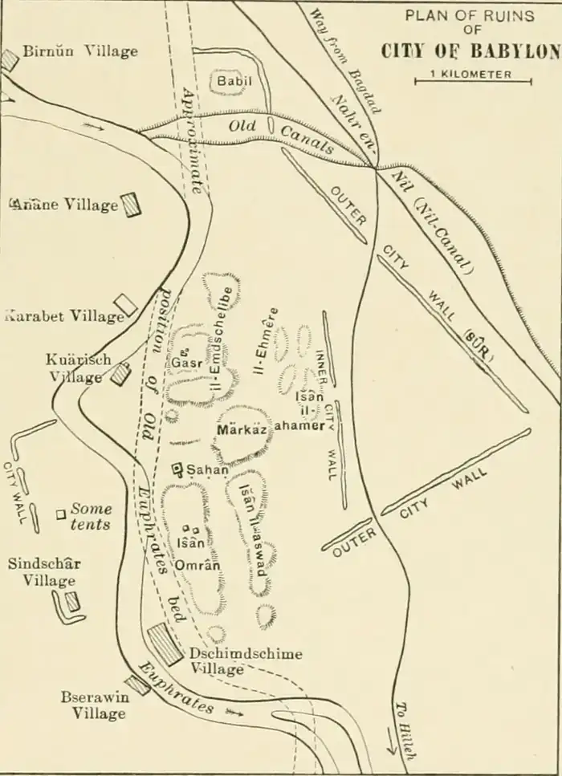
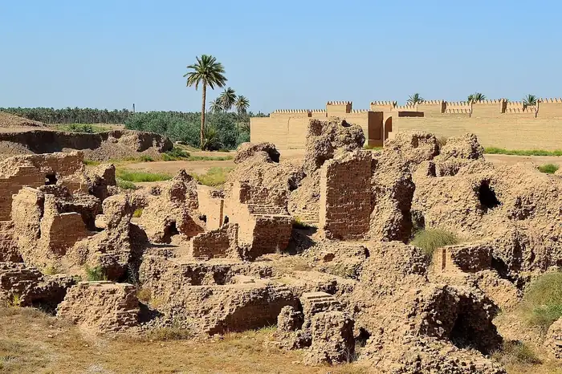
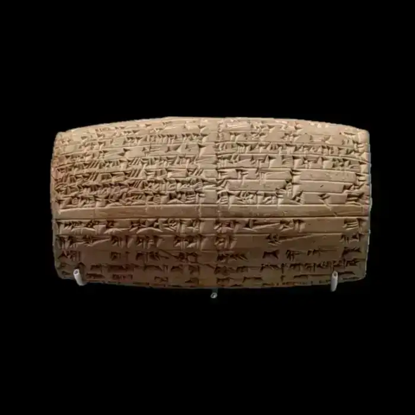

The text
Genesis 11 describes a city and a tower built to reach the heavens, and the confusion of languages as the consequence. It is a story about human ambition and the origin of linguistic diversity, set in a Mesopotamian landscape of ziggurats.
Maps, diagrams and images






The reading
The literal structure it refers to is the Mesopotamian ziggurat — stepped temple towers, of which Etemenanki at Babylon is the best-known candidate. They were real, they were tall, and their name in Akkadian means 'house of the foundation of heaven and earth'.
The spaceport reading requires a launch facility, propellant, and a purpose — none of which appears in the text, the archaeology or the Mesopotamian record. It also requires the story to be a report rather than a narrative, which is not how it is read by anyone who studies it.
Documented: the text, its genre and its setting.
Documented: Mesopotamian ziggurats, including Etemenanki.
Not established: any spaceport, or any technology.
The error: treating an etiological narrative as a technical report.
The honest label: debunked.
Why it is in the archive
Because it is the archetypal misreading of a text whose genre is the answer, and because Bruegel's painting is doing most of the visual work in the claim.
Open resources on this topic
- PapersOpen-access articles: DOAJ · PubMed Central · Internet Archive Scholar
- BooksPublic-domain and borrowable copies: Open Library · Project Gutenberg · Google Books · Internet Archive
Cite this page
Momin, S. (2026). Babel as a Spaceport. The Larger World Archive. https://drsamonline.github.io/LARGE_GLOBE/babel-spaceport.htmlMomin, Sohil. “Babel as a Spaceport.” The Larger World Archive, 2026, https://drsamonline.github.io/LARGE_GLOBE/babel-spaceport.html.Momin, Sohil. “Babel as a Spaceport.” The Larger World Archive, 2026. https://drsamonline.github.io/LARGE_GLOBE/babel-spaceport.html.@misc{babel2026babel,
author = {Momin, Sohil},
title = {Babel as a Spaceport},
year = {2026},
howpublished = {The Larger World Archive},
url = {https://drsamonline.github.io/LARGE_GLOBE/babel-spaceport.html},
note = {Last reviewed 20 November 2026}
}Last reviewed 20 November 2026 · Corrections policy · this page is not peer reviewed
Sources for this page
- Wikipedia, “Tower of Babel” — the text and its interpretationsen.wikipedia.org
- Wikipedia, “Ziggurat” — the structure it refers toen.wikipedia.org
- Wikipedia, “Etemenanki” — the Babylonian candidateen.wikipedia.org
- Wikipedia, “Etiology” — the genre of the storyen.wikipedia.org